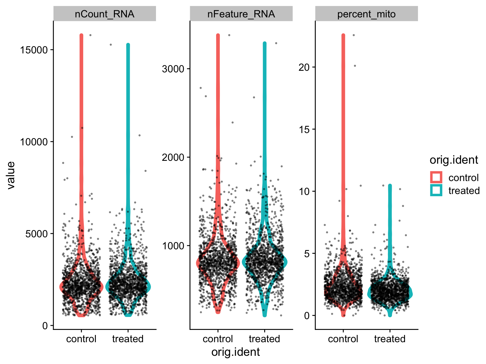
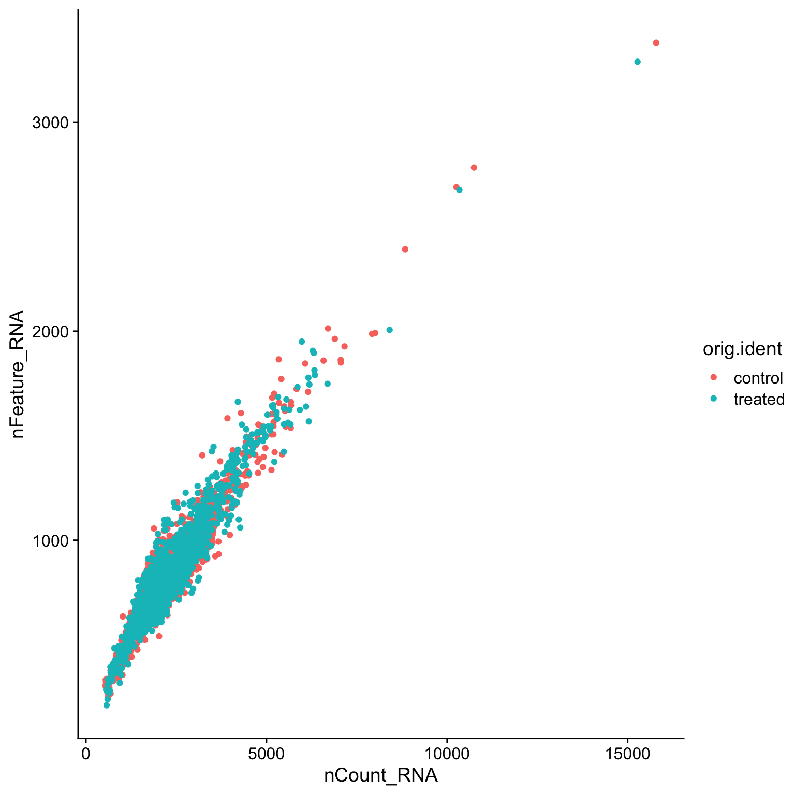

Example: peripheral blood mononuclear cell (PBMC) sample data
To follow along on RStudio local:
Creating a Seurat object
Single-cell RNA-seq counts are usually stored as a sparse matrix due to the high percentage of zeros. In a sparse matrix zeros are removed and only non-zero values are stored, which saves memory and speeds up operations.
The Read10X function can be used with the output directory generated by 10X Cell Ranger to load the counts data as a sparse matrix. However, our data is saved as a comma-separated table, which can be loaded as a data.frame and then converted to a sparse matrix. Similarly, start with reading in the data as a matrix if you used other alignment tools (Alevin, kallisto-bustools, etc) to generate count data.
# Import matrix of counts
data_url <- "https://scrnaseq-workshop.s3-us-west-2.amazonaws.com"
# Seurat uses data in the from of "genes/features as rows, cell barcodes as columns"
pbmc_mtx <- file.path(data_url, "PBMC_cDNA.csv.gz") %>%
read_csv() %>%
column_to_rownames("X1") %>%
as.sparse()
# Always be careful not to print the entire matrix
# Don't use head(), since it prints all columns
# note the "."s
pbmc_mtx[1:10, 1:10]
#> 10 x 10 sparse Matrix of class "dgCMatrix"
#>
#> AL627309.1 . . . . . . . . . .
#> RP11-206L10.2 . . . . . . . . . .
#> LINC00115 . . . . . . . . . .
#> NOC2L . . . . . . . . 1 .
#> KLHL17 . . . . . . . . . .
#> PLEKHN1 . . . . . . . . . .
#> HES4 . . . . . 2 . . . .
#> ISG15 . . . . . 4 . 1 . 2
#> AGRN . . . . . . . . . .
#> C1orf159 . . . . . . . . . .# See how sparse the data is - calculate fraction of zeros
n_zeros <- pbmc_mtx[pbmc_mtx == 0] %>%
length()
n_zeros / length(pbmc_mtx)
#> [1] 0.9328582Analysis using Seurat is centered around the Seurat object, which serves as a container to store the input data and any results that are generated. A Seurat object can be created from our sparse matrix using the CreateSeuratObject function.
The CreateSeuratObject function also allows us to perform some initial QC filtering. The min.cells option filters features (genes) to only include those that are present in a minimum number of cells.
# Create Seurat object using gene expression data
sobj <- CreateSeuratObject(
pbmc_mtx,
min.cells = 5 # Remove genes that are detected in < 5 cells
)
# Seurat object is a type of S4 object, you may see "S4" in error messages
isS4(sobj)
#> [1] TRUEInteracting with the Seurat object
Handling multiple assays
The Seurat object is organized into a heirarchy of data structures with the outermost layer including a number of slots, which can be accessed using the @ operator.
With Seurat v3.0, the Seurat object allows users to easily store multiple scRNA-seq assays (CITE-seq, cell hashing, etc) in the same object. The data from each assay is stored as a list in the assays slot. To switch between different assays users can change the value stored in the active.assay slot. We can also view the current default assay using the DefaultAssay function. Many Seurat functions also include an assay argument that lets users specify the desired assay.
Please note that Seurat v2 object structure and functions are quite different. Please see function UpdateSeuratObject.
# Peak at the object, only works in RStudio, not base R
# Also don't use View when knitting RMD files
View(sobj)
# Assays are stored as a list in the "assays" slot
sobj@assays
#> $RNA
#> Assay data with 12572 features for 2700 cells
#> First 10 features:
#> AL627309.1, RP11-206L10.2, LINC00115, NOC2L, KLHL17, PLEKHN1,
#> HES4, ISG15, AGRN, C1orf159# The Seurat object stores the current default assay
sobj@active.assay
#> [1] "RNA"# Using a function to access the same information as above
DefaultAssay(sobj)
#> [1] "RNA"# Getting help with functions
# ?DefaultAssay
# Set default assay like this
DefaultAssay(sobj) <- "RNA"
Retrieving raw and normalized counts
The data from each assay is stored as separate Assay objects that are also divided into slots that store the raw and normalized counts along with other downstream results. We can use the GetAssayData function to retrieve the raw and normalized counts matrices.
# Raw counts, autocompletion helps a lot
sobj@assays$RNA@counts[1:5, 1:10] # only printing first 5 rows and first 10 columns
#> 5 x 10 sparse Matrix of class "dgCMatrix"
#>
#> AL627309.1 . . . . . . . . . .
#> RP11-206L10.2 . . . . . . . . . .
#> LINC00115 . . . . . . . . . .
#> NOC2L . . . . . . . . 1 .
#> KLHL17 . . . . . . . . . .# Using a function to access the same information as above, better option
GetAssayData(sobj, slot = "counts") %>%
.[1:5, 1:10]
#> 5 x 10 sparse Matrix of class "dgCMatrix"
#>
#> AL627309.1 . . . . . . . . . .
#> RP11-206L10.2 . . . . . . . . . .
#> LINC00115 . . . . . . . . . .
#> NOC2L . . . . . . . . 1 .
#> KLHL17 . . . . . . . . . .# Normalized counts
# This matrix is the same as counts since we haven't normalized the data yet!
# Remember that if you forget to normalize, some of the downstream functions still run, but will be wrong!
sobj@assays$RNA@data[1:5, 1:10]
#> 5 x 10 sparse Matrix of class "dgCMatrix"
#>
#> AL627309.1 . . . . . . . . . .
#> RP11-206L10.2 . . . . . . . . . .
#> LINC00115 . . . . . . . . . .
#> NOC2L . . . . . . . . 1 .
#> KLHL17 . . . . . . . . . .# Using a function to access the same information as above, better option
GetAssayData(sobj, slot = "data") %>%
.[1:5, 1:10]
#> 5 x 10 sparse Matrix of class "dgCMatrix"
#>
#> AL627309.1 . . . . . . . . . .
#> RP11-206L10.2 . . . . . . . . . .
#> LINC00115 . . . . . . . . . .
#> NOC2L . . . . . . . . 1 .
#> KLHL17 . . . . . . . . . .Retrieving cell and features names
Cell barcodes and gene (feature) names can be retrieved from the Seurat object using the colnames and rownames functions, respectively. We can run these functions directly on the Seurat object to automatically retrieve information for the default assay.
# Get cell names
sobj@assays$RNA@counts %>%
colnames() %>%
.[1:20] # only printing first 20
#> [1] "AAACATACAACCAC-1" "AAACATTGAGCTAC-1" "AAACGCTGACCAGT-1"
#> [4] "AAACGCTGGTTCTT-1" "AAAGTTTGATCACG-1" "AAATCATGACCACA-1"
#> [7] "AACATTGATGGGAG-1" "AACCGATGCTCCCA-1" "AACCGCCTCTACGA-1"
#> [10] "AACCTTACGCGAGA-1" "AACTCACTCAAGCT-1" "AACTCGGAAAGTGA-1"
#> [13] "AAGATGGAGATAAG-1" "AAGCCATGTCTCGC-1" "AAGCGTACGTCTTT-1"
#> [16] "AAGGTCTGACAGTC-1" "AAGTCTCTCGGAGA-1" "AATAGGGAGAATGA-1"
#> [19] "AATGGAGAATCGTG-1" "AATGGCTGTAAAGG-1"# Using a function to access the same information as above, better option
Cells(sobj) %>%
.[1:20]
#> [1] "AAACATACAACCAC-1" "AAACATTGAGCTAC-1" "AAACGCTGACCAGT-1"
#> [4] "AAACGCTGGTTCTT-1" "AAAGTTTGATCACG-1" "AAATCATGACCACA-1"
#> [7] "AACATTGATGGGAG-1" "AACCGATGCTCCCA-1" "AACCGCCTCTACGA-1"
#> [10] "AACCTTACGCGAGA-1" "AACTCACTCAAGCT-1" "AACTCGGAAAGTGA-1"
#> [13] "AAGATGGAGATAAG-1" "AAGCCATGTCTCGC-1" "AAGCGTACGTCTTT-1"
#> [16] "AAGGTCTGACAGTC-1" "AAGTCTCTCGGAGA-1" "AATAGGGAGAATGA-1"
#> [19] "AATGGAGAATCGTG-1" "AATGGCTGTAAAGG-1"# Get feature names
sobj@assays$RNA@counts %>%
rownames() %>%
.[1:20]
#> [1] "AL627309.1" "RP11-206L10.2" "LINC00115" "NOC2L"
#> [5] "KLHL17" "PLEKHN1" "HES4" "ISG15"
#> [9] "AGRN" "C1orf159" "TNFRSF18" "TNFRSF4"
#> [13] "SDF4" "B3GALT6" "UBE2J2" "ACAP3"
#> [17] "PUSL1" "CPSF3L" "GLTPD1" "DVL1"# rownames() directly on the object also works
rownames(sobj) %>%
.[1:20]
#> [1] "AL627309.1" "RP11-206L10.2" "LINC00115" "NOC2L"
#> [5] "KLHL17" "PLEKHN1" "HES4" "ISG15"
#> [9] "AGRN" "C1orf159" "TNFRSF18" "TNFRSF4"
#> [13] "SDF4" "B3GALT6" "UBE2J2" "ACAP3"
#> [17] "PUSL1" "CPSF3L" "GLTPD1" "DVL1"# Get cell (colums) and feature (rows) counts
ncol(sobj)
#> [1] 2700nrow(sobj)
#> [1] 12572Accessing project meta.data
The Seurat object includes a data.frame that contains cell meta data for all of the assays present in the Seurat object. This data.frame is stored in the meta.data slot and can be accessed using double brackets ([[]]) or the FetchData function. As we move through our analysis, information will be automatically added to the meta.data. We can also manually add or modify information stored in the meta.data, which is useful when creating custom plots.
Initially the meta.data table will include the number of counts for each cell and the number of genes (or other features) detected for each cell. There is also an orig.ident column which contains the original cell labels (identities), by default this would be the project name.
# The meta.data table contains stats for each cell
sobj@meta.data %>%
head() # head defaults to showing 5 rows
#> orig.ident nCount_RNA nFeature_RNA
#> AAACATACAACCAC-1 SeuratProject 2419 779
#> AAACATTGAGCTAC-1 SeuratProject 4901 1350
#> AAACGCTGACCAGT-1 SeuratProject 2174 781
#> AAACGCTGGTTCTT-1 SeuratProject 2259 789
#> AAAGTTTGATCACG-1 SeuratProject 1265 441
#> AAATCATGACCACA-1 SeuratProject 4125 1365# Access a column of the meta data
sobj[["nCount_RNA"]] %>%
head()
#> nCount_RNA
#> AAACATACAACCAC-1 2419
#> AAACATTGAGCTAC-1 4901
#> AAACGCTGACCAGT-1 2174
#> AAACGCTGGTTCTT-1 2259
#> AAAGTTTGATCACG-1 1265
#> AAATCATGACCACA-1 4125# Using a function to access the same information as above, better option
FetchData(sobj, vars = "nCount_RNA") %>%
head()
#> nCount_RNA
#> AAACATACAACCAC-1 2419
#> AAACATTGAGCTAC-1 4901
#> AAACGCTGACCAGT-1 2174
#> AAACGCTGGTTCTT-1 2259
#> AAAGTTTGATCACG-1 1265
#> AAATCATGACCACA-1 4125# FetchData can also be used to retrieve other data from the Seurat object
FetchData(
sobj,
vars = "CD8A",
slot = "counts"
) %>%
head()
#> CD8A
#> AAACATACAACCAC-1 1
#> AAACATTGAGCTAC-1 0
#> AAACGCTGACCAGT-1 0
#> AAACGCTGGTTCTT-1 1
#> AAAGTTTGATCACG-1 0
#> AAATCATGACCACA-1 0Splitting out sample information with tidyverse manipulations
In the case of this particular dataset, the cell barcodes contain -1 or -2 to denote different samples (comes from cellranger aggr). We can split this information out into a new column or overwrite the orig.ident column.
# stringr function, also part of tidyverse
str_remove(Cells(sobj), ".+-")[1:5] # removes everything before and including "-"
#> [1] "1" "1" "1" "1" "1"#> orig.ident nCount_RNA nFeature_RNA
#> AAACATACAACCAC-1 1 2419 779
#> AAACATTGAGCTAC-1 1 4901 1350
#> AAACGCTGACCAGT-1 1 2174 781
#> AAACGCTGGTTCTT-1 1 2259 789
#> AAAGTTTGATCACG-1 1 1265 441
#> AAATCATGACCACA-1 1 4125 1365Setting cell identities
The cell identities are used by various functions when grouping and plotting cells. When first creating a Seurat object, the cell identities will be set to the same values present in the orig.ident column in the meta.data table. The current cell identities are stored in the active.ident slot and can be accessed using the Idents function. Cell identities can be renamed using the RenameIdents function. Changing the cell identites will not alter the names stored in the meta.data table or vice versa. To update the meta.data table, we can use the AddMetaData function.
# By default the cell identity is set to orig.ident
sobj@active.ident %>%
head()
#> AAACATACAACCAC-1 AAACATTGAGCTAC-1 AAACGCTGACCAGT-1 AAACGCTGGTTCTT-1
#> SeuratProject SeuratProject SeuratProject SeuratProject
#> AAAGTTTGATCACG-1 AAATCATGACCACA-1
#> SeuratProject SeuratProject
#> Levels: SeuratProject# since we updated orig.ident, we want to update this
Idents(sobj) <- "orig.ident"
# Levels list all possible identities
sobj@active.ident %>%
head()
#> AAACATACAACCAC-1 AAACATTGAGCTAC-1 AAACGCTGACCAGT-1 AAACGCTGGTTCTT-1
#> 1 1 1 1
#> AAAGTTTGATCACG-1 AAATCATGACCACA-1
#> 1 1
#> Levels: 1 2#> AAACATACAACCAC-1 AAACATTGAGCTAC-1 AAACGCTGACCAGT-1 AAACGCTGGTTCTT-1
#> 1 1 1 1
#> AAAGTTTGATCACG-1 AAATCATGACCACA-1
#> 1 1
#> Levels: 1 2# Rename cell identities
# Many Seurat functions return a Seurat object
sobj <- RenameIdents(
sobj,
"1" = "control",
"2" = "treated"
)
Idents(sobj) %>%
head()
#> AAACATACAACCAC-1 AAACATTGAGCTAC-1 AAACGCTGACCAGT-1 AAACGCTGGTTCTT-1
#> control control control control
#> AAAGTTTGATCACG-1 AAATCATGACCACA-1
#> control control
#> Levels: control treated# Add cell identities to the meta.data table
sobj <- AddMetaData(
sobj,
metadata = Idents(sobj),
col.name = "orig.ident"
)
sobj@meta.data %>%
head()
#> orig.ident nCount_RNA nFeature_RNA
#> AAACATACAACCAC-1 control 2419 779
#> AAACATTGAGCTAC-1 control 4901 1350
#> AAACGCTGACCAGT-1 control 2174 781
#> AAACGCTGGTTCTT-1 control 2259 789
#> AAAGTTTGATCACG-1 control 1265 441
#> AAATCATGACCACA-1 control 4125 1365Subsetting the Seurat object
The cells and features present in the Seurat object can be filtered using the subset function. This is the function to use when you are filtering the data for quality control, or want to filter out (or keep) certain cell populations for downstream analysis.
# Subset based on gene expression
s_cd8 <- subset(sobj, subset = CD8A > 1)
ncol(s_cd8) # how many cells are left?
#> [1] 107# Subset based on meta.data columns
s_feature <- subset(sobj, subset = nFeature_RNA > 250)
# Subset based on cell identity
s_control <- subset(sobj, idents = "control")
ncol(s_control)
#> [1] 1342# Subset with vector of features
s_cds <- subset(sobj, features = c("CD4", "CD8A"))
rownames(s_cds) # what genes are kept?
#> [1] "CD4" "CD8A"# Subset with vector of cell barcodes
s_bar <- subset(sobj, cells = c("AAACGCTGACCAGT-1", "AAATCATGACCACA-1", "TTTCGAACACCTGA-2"))
colnames(s_bar)
#> [1] "AAACGCTGACCAGT-1" "AAATCATGACCACA-1" "TTTCGAACACCTGA-2"# Subset using multiple criteria
s_multi <- subset(sobj, subset = CD8A > 1, idents = "control")
Other data slots, currently empty, but will be populated as we process the data.
sobj@reductions # dimension reduction (PCA, tSNE, UMAP)
sobj@graphs # info used in clustering
# What other info can you find in the object?
Assessing quality and filtering
Metrics that are commonly used to assess cell quality include:
- Number of counts per cell barcode
- Number of genes per barcode
- The percentage of counts from mitochondrial genes per barcode
A low number of counts, a low number of detected genes, and a high percentage of mitochondrial counts suggests that the cell had a broken membrane and the cytoplasmic mRNA leaked out. Conversely, an abnormally high number of counts and detected genes could indicate the presence of a doublet. Note that certain cell types have very different RNA content that could lead to large differences as well.
Quantify mitochondrial counts
To calculate the percentage of mitochondrial counts for each cell we can use the PercentageFeatureSet function.
# Calculate percentage of mitochondrial reads for each cell
sobj <- PercentageFeatureSet(
sobj,
pattern = "^MT-", # all mitochondrial genes in human start with "MT-"
col.name = "percent_mito" # add to this column in the meta.data
)
sobj@meta.data %>%
head()
#> orig.ident nCount_RNA nFeature_RNA percent_mito
#> AAACATACAACCAC-1 control 2419 779 3.017776
#> AAACATTGAGCTAC-1 control 4901 1350 3.795144
#> AAACGCTGACCAGT-1 control 2174 781 3.817847
#> AAACGCTGGTTCTT-1 control 2259 789 3.098716
#> AAAGTTTGATCACG-1 control 1265 441 3.478261
#> AAATCATGACCACA-1 control 4125 1365 4.581818EXERCISE: Create violin plots comparing cell metrics
# Create violin plot comparing nCount, nFeature, and percent_mito for each sample
# check the documentation, ?VlnPlot
# sobj@meta.data %>%
ANSWER
# Using Seurat functions, note that the output plot can be further modified with ggplot syntax
# VlnPlot(
# sobj,
# features = c("nCount_RNA", "nFeature_RNA", "percent_mito"),
# ncol = 3,
# pt.size = 0.25
# )
# Using ggplot2
temp_df <- sobj@meta.data %>%
gather(key, value, -orig.ident)
ggplot(temp_df, aes(orig.ident, value, color = orig.ident)) +
geom_violin(size = 2) +
geom_jitter(size = 0.5, color = "black", alpha = 0.4) +
facet_wrap(~key, scales = "free") +
theme(legend.position = "none") +
cowplot::theme_cowplot()

EXERCISE: Create scatter plots comparing cell metrics
# Create a scatter plot comparing nCount and nFeature
# ?FeatureScatter
# sobj@meta.data %>%
ANSWER
# Using Seurat functions
# p <- FeatureScatter(
# sobj,
# feature1 = "nCount_RNA",
# feature2 = "nFeature_RNA"
# )
# Using ggplot2
p <- ggplot(sobj@meta.data, aes(nCount_RNA, nFeature_RNA, color = orig.ident)) +
geom_point() +
cowplot::theme_cowplot()
p

Filtering cells
To filter cells for QC, we can use the subset function mentioned above. Be sure to look at the QC results as generated above to make decisions about reasonable thresholds.
# Filter cells based on number of genes and percent mito UMIs
sobj <- sobj %>%
subset(
nFeature_RNA > 250 & # Remove cells with < 250 detected genes
nFeature_RNA < 2500 & # Remove cells with > 2500 detected genes (could be doublets)
percent_mito < 10 # Remove cells with > 10% mitochondrial reads
)
# How many cells were removed?
ncol(sobj) # originally we had 2700
#> [1] 2686# Add filtering cutoffs on original scatter plots
p_cut <- p +
geom_hline(yintercept = c(250, 2500), linetype = 2)
p_cut

Saving your Seurat object for future use
# create data folder
dir.create("data", showWarnings = FALSE)
# or save.image to save entire environment
# or set RStudio to do this by default <- we don't recommend
saveRDS(sobj, "data/filtered_sobj.rds")
# for future use, read_rds
# zipped, so smaller than the size in your environment
sobj <- readRDS("data/filtered_sobj.rds")